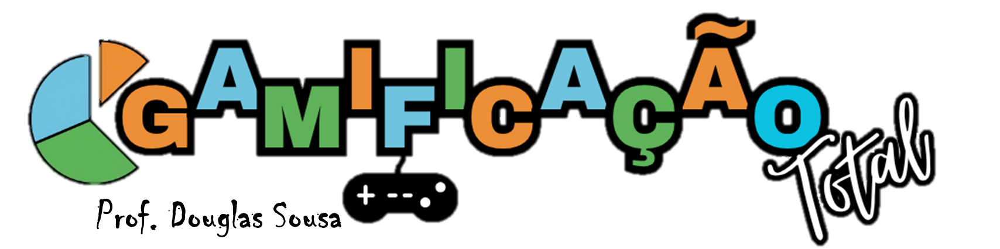

Uma exposição está prestes a abrir. Compare pinturas, batalhas e documentos para contar uma Independência maior do que o Grito do Ipiranga.
Cada entrada começa com zero ponto. Todas as informações necessárias estarão nas galerias, e cada sala concluída será registrada no ranking.